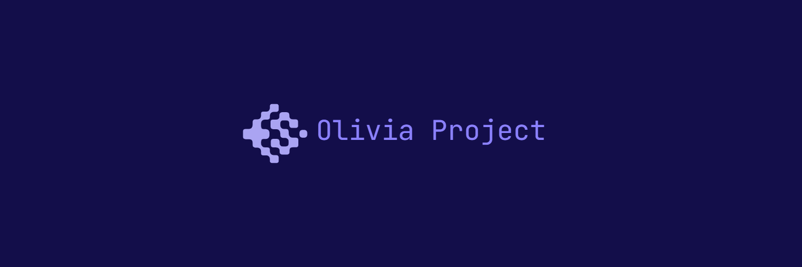

Projetos
O Projeto Olivia (OP) consiste em scripts em linguagem Julia e Python para a análise de sistemas dinâmicos não lineares. Os scripts que compõem o PO calculam os Expoentes de Lyapunov, Diagramas de Bifurcação, Teste 01 e Bacias de atração, Fase Retrato e Mapa de Poincaré, formando assim um diagnóstico do comportamento caótico ou periódico do sistema dinâmico não linear analisado.
 GitHub
GitHub

O projeto é para determinar a dinâmica não linear de sistemas fracionários aplicados em diversas áreas da ciência. Exemplo na física, química, biologia e nas engenharias. Os scripts disponibilizados aqui são apreciados na linguagem Julia para o processamento dos dados e o Python para construir os gráficos dos resultados obtidos. Dessa forma, para melhor desempenho dos scripts criados indicamos:
GitHub